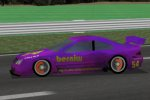
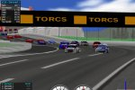

TORCSWhat is TORCS?

Hi. In case you are looking for Celtic Torcs then this is the wrong place, as you can guess from the
screenshot on the left. But some entertainment and fun is also good for you, so you are welcome to
stay with me and read on. Features Choose from 42 different cars, 30 tracks, more than 50 opponents to race against. Steer with a joystick or steering wheel, if it's supported by your platform. It is also possible to drive with the mouse or the keyboard, but it's not easy. Graphic features lighting, smoke, skidmarks and glowing brake disks. The simulation features a simple damage model, collisions, tire and wheel properties (springs, dampers, stiffness, ...), aerodynamics (ground effect, spoilers, ...) and much more. The gameplay allows different types of races from the simple practice session up to the championship. Enjoy racing against your friends in the split screen mode with up to four human players. PlatformsSupported platforms are Linux (x86 and ppc are known to work), FreeBSD and Windows XP/2000/98. Credits
TORCS is developed by Eric Espié, Christophe Guionneau and other contributors. Visit the official
TORCS site for more information. |
|
Cool. But how do I get and install TORCS? |